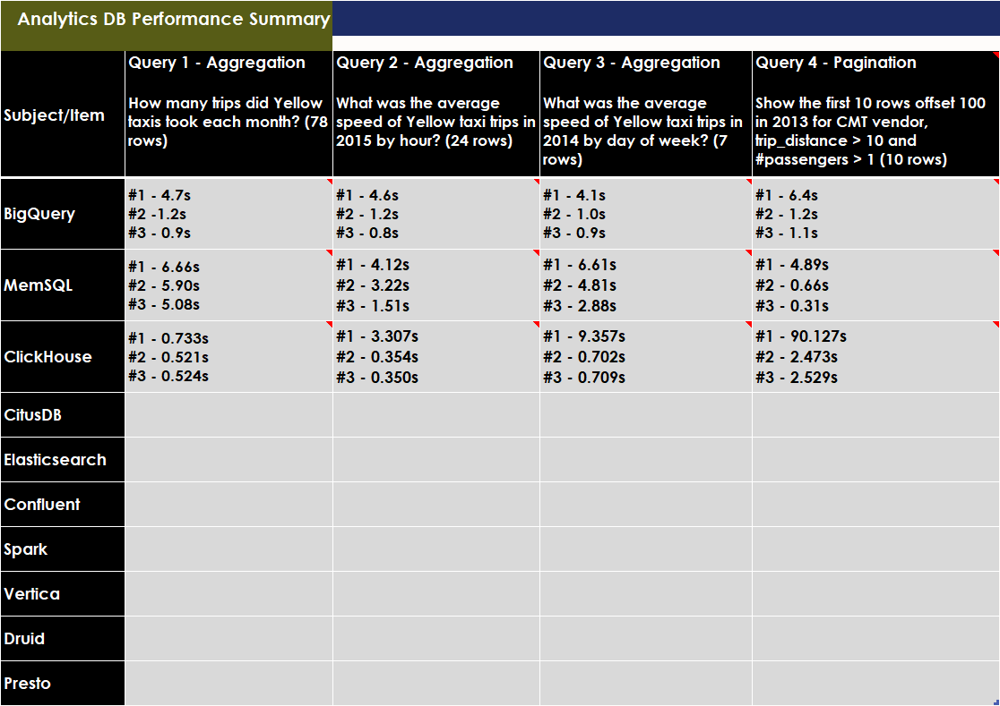

Benchmarking Summary¶
This is a summary page of benchmarking results of popular analytics/OLAP databases that I’ve undertaken using the dataset 1.1 Billion Taxi Rides <>_. The dataset has 51 columns and takes up about 500 GB of disk space uncompressed.
Important
This benchmarking is not promoting any technology as such and is an attempt to compare what is out there. Though these benchmarks used the same dataset, I wouldn’t consider any two as comparing apples to apples. The times recorded don’t necessarily reflect the top performance these systems are capable of. It’s likely each system could have performed faster if more effort was put into setup, configuration and/or better hardware was available. There are some cases where I re-ran a benchmark with more tuning to achieve a better result and in these cases only the fastest benchmark will be listed below. I’m interested in learning of any optimisations that can improve performance. Please open an issue <>_ if you’ve got any configuration settings to share.
The table is sorted by the average time across all queries:
